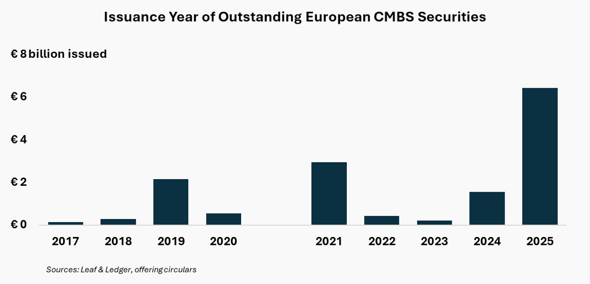
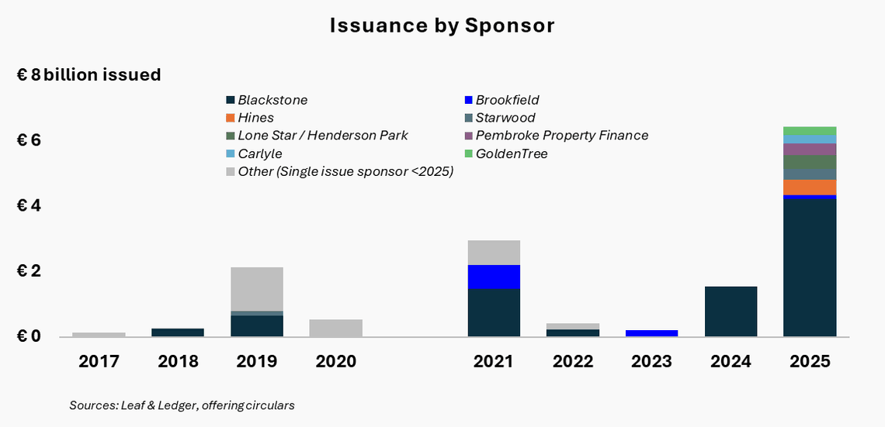
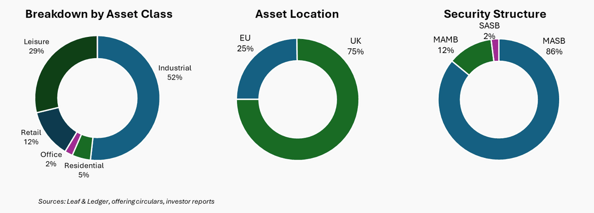
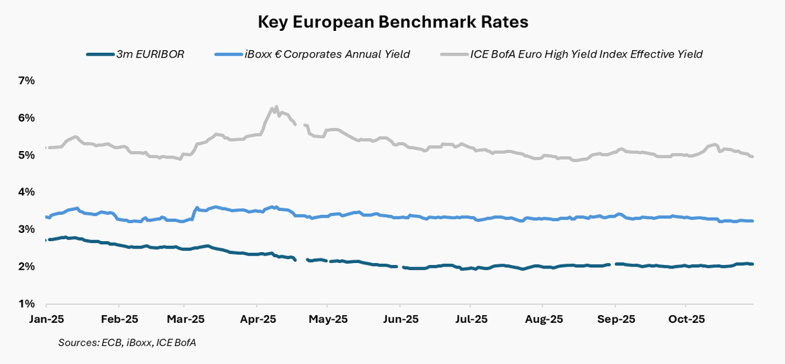
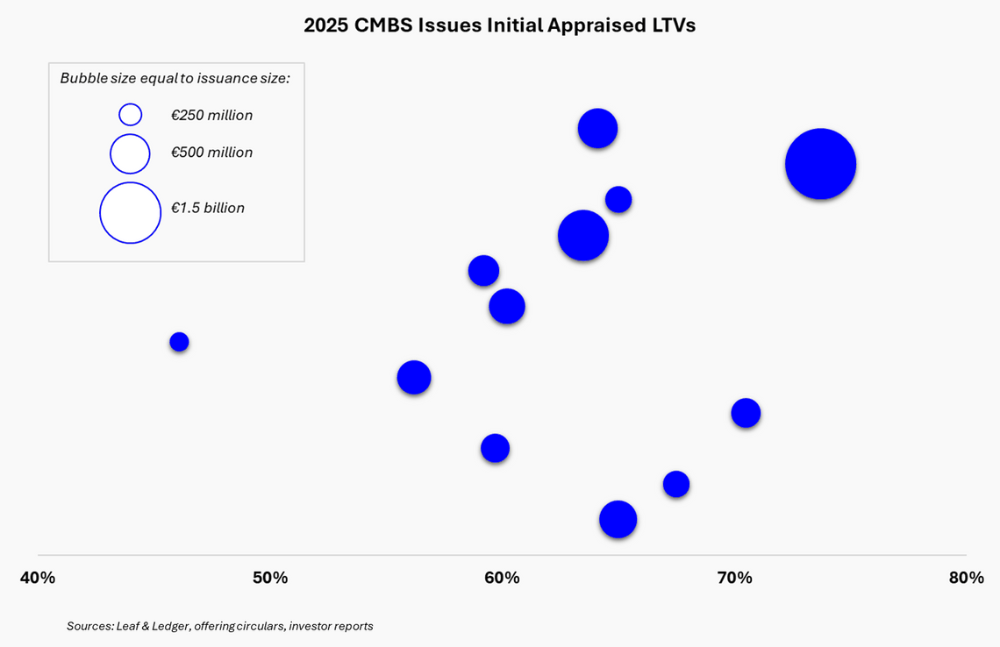
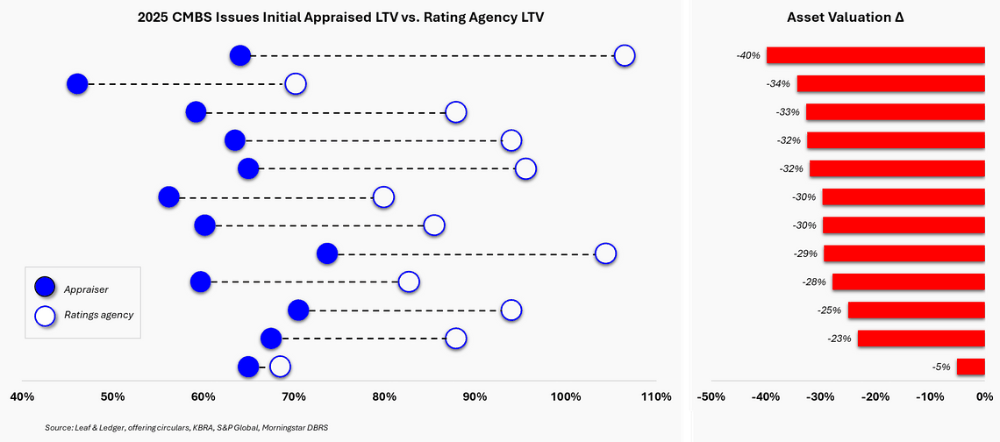

The CMBS Window on Private Asset Valuations in Europe
Europe’s CMBS market is smaller than the US market, yet it serves the same function of transferring real estate risk from banks to investors. As the bonds are sold to public investors, regulations require issuers and rating agencies to disclose granular details on otherwise private underlying assets. These disclosures provide a rare look into private asset markets.

After a lean period during Covid-19, and a slow reset in commercial real estate risk appetite, CMBS has roared back to life in 2025. The prospect of an end to the global rate-hiking cycle and the growth of private credit supported refinancing and liability management for legacy-era debts. As the CMBS market in Europe has re-emerged, the window into private real estate valuations has widened. Because of the securitized structure of these asset-backed products, investors can see two viewpoints on underlying value, and the result is a consistent split in opinion between appraiser valuations and rating agency models. As investors try to triangulate market values, the differing views highlight clear signs of lagging valuations in private markets.
Most of the European CMBS bonds that can trade today were issued in 2025, as a stable and relatively lower rate environment has encouraged refinancing as well as new lending. Issuance has totalled €6.4 billion across 12 deals from January to October 2025, which is a sizable annual cohort and a fair proxy for the market as a whole [1]. Only a handful of large sponsors dominate this cohort, which keeps appraisal methods and disclosure conventions broadly comparable.
The European standard-issue
While in recent years the US CMBS market has adapted to investor concerns of real estate risk by providing liquidity in the simplicity of single-asset, single-borrower (SASB) structures, the European market has remained characteristically diverse in product structure, asset class, and location [2]. The commonality between issues in Europe has taken the form of sponsors being mega-cap private equity firms, with considerable in-house expertise, and deep experience with the structure.

More uniform sponsor underwriting allows cleaner like-for-like comparison across the cohort. The 2025 European CMBS issues span five asset classes and both the EU and UK, across a range of structures.

Further simplifying the compilation of a cohort-wide assessment, for the first time in years the rate backdrop remained broadly stable throughout the year, reducing the need for material adjustments for shifting investor outlooks.

The 2025 landscape: valuations in focus
As with any complex structured security, there are many risk factors to consider in investor modelling. One key balance-sheet factor is the loan-to-value (LTV) ratio, or the amount of debt secured against the asset relative to its value. For yield-focused CMBS investors, the risk of a haircut when collateral value falls below debt is a central concern. Typical modelling builds up a risk profile of the security to assess relative value against alternative asset allocations.

In practice, investors often start with the underlying assets, layer on the capital structure, review the security itself including any credit enhancements, and assess the managing sponsor. This provides a robust view of risk to balance against expected returns, but it does ultimately rely on an accurate picture of asset value underpinning the entire structure.
Appraisal drift and lagging values
Many institutional investors rely on the data provided by a global bank as issuer / arranger, often without fully considering the incentives and behavioural responses at play in asset-backed securities markets [3]. Building detailed models of the underlying property cash flows is time-consuming and specialized work, best undertaken by a team of analysts. Fortunately for investors, in addition to the asset appraisals provided by the issuer, rating agencies model bottom-up assessments of portfolio valuation. These valuations are often seen as stress-tests, designed to protect rating agency reputation, and also provide a more dispassionate view of operating performance and local market conditions [4]. Whether they provide a markedly different view of operational performance or simply assess that a ‘portfolio premium’ has been too generously applied by the appraiser, at the very least they offer a second opinion [5].
Both valuers are paid by the issuer, yet their roles create different vantage points. Rating agencies are brought in during capital market events to size credit, lending their credibility to risk ratings, while protecting their prudential pedigrees. While commercial real estate asset appraisers compete in a highly competitive marketplace for recurring reporting fees and client retention, where frequent assessments leave them anchored to prior values and more biased towards smoothing valuation adjustments.
With this in mind, we examine asset valuations in the 2025 CMBS cohort, as both one of the largest components of the outstanding market and one of the most current assessments of commercial real estate market values.

The chart above summarizes the difference between the valuations of the underlying asset portfolio by appraisers and the respective rating agency at the time of issuance, as represented by LTVs. While the range of differences is wide, the bias is very clear – all appraisals show higher values than the rating agencies. For more than 80% of issuances, rating-agency haircuts ranged from 23% to 34%, with a median of 29.6%. This is a like-for-like comparison at issuance in 2025, roughly two years after the end of the European rate-hiking cycle that fundamentally repriced assets [5].
While savvy CMBS investors will have priced this in their bidding, this structural divergence in underlying asset valuations has wider implications worth considering.
Implications: behind the curtain of private markets
CMBS is only a slice of private real estate, which in turn is only a slice of private markets, but it is a slice with better disclosure than most private vehicles. When the same pools show a systematic difference between appraised values and rating-agency valuations, it signals something about marks in adjacent parts of the private market ecosystem, especially where liquidity is thin and disclosure is light. Appraisers can be slow to update large shifts in market values, particularly in illiquid markets with fewer comparable transactions [7]. Sponsors and lenders prize continuity and stability, and it becomes easier to encourage only marginal value changes when comparable deals are few and far between. For the behavioural layer behind this deferral of market reality, see our summer series note Extend and Pretend, Again. Numbers drift rather than jump, even if the underlying market itself tells a dramatically different story.
The lesson is not that these securities are weak. The 2025 cohort priced on competitive terms, reflecting a clear pickup in investor appetite [8]. The lesson is that we can clearly see two valuation regimes operating side by side, with a noisy dispersion of results. The distance between them is large enough to change how investors think about the true cushion in today’s structures and, by extension, the cushions embedded in private market securities and portfolios.
Regulators are flagging related issues beyond CMBS and beyond real estate. The BIS recently warned that private letter ratings used by US life insurers appear systematically inflated, and the NAIC has flagged persistent ratings-grade uplifts by lesser-known rating agencies [9]. The implication of ratings shopping and grade inflation echoes the gap we observe between CMBS appraisals and agency values - greater measurement noise in private market data, which can obscure underlying values and complicate risk assessment.
Shadow marks and the future of private asset values
A small market can tell a large story. This sample of European CMBS reveals how quickly comfort can fade once values are rebuilt from the ground up. Appraised values may describe the world that sponsors hope to finance, while more objective valuations describe the world capital markets recognise under stress. The gap between idealized and realized values is relevant in parts of private markets where transaction data is opaque and liquidity is limited.
Like the foundations of a house, if securities are built on underlying assets whose valuations lack confidence and strength, the entire structure is at risk when under stress. The more complex the structuring of the investment, the further the traded derivative is from the underlying asset, the more reliant investors become on ratings and summaries, and the harder it can be to tell whether the entire structure is already underwater.
- Issuance size sourced from the final offering memoranda. CMBS deal count exclusive to transactions closed in 2025 related to commercial real estate assets. The following issues were included in this review: Sequoia Logistics 2025-1 DAC, Taurus 2025-1 EU DAC, Taurus 2025-2 UK DAC, UK Logistics 2025-1 DAC, Pine Finance 2025-1 DAC, Sage AR Funding 2025 No. 1 plc, Taurus 2025-3 UK DAC, Taurus 2025-4 UK DAC, Lagarino (Eloc No. 40) DAC, Caister Finance DAC, Pembroke Property Finance 3 DAC, and UK Logistics 2025-2 DAC. ↩
- According to Trepp, market share of SASB deals in the US in 9M25 / 9M24 was 59% / 62% respectively (“CMBS Issuance Remains Healthy in Q3 2025, Driven by Single-Borrower Deals”, Trepp, Oct 6, 2025). ↩
- For a reminder see the prior Leaf & Ledger insight Extend and Pretend, Again published in the summer series. ↩
- As an example of rating agency methodology for this independent asset valuation, KBRA in a September 2025 presale report explains that it first rebuilds sustainable net cash flow, strips out one-off items, and benchmarks issuer rent and vacancy data against independent third-party sources. KBRA reviews recent technical and environmental due diligence reports and incorporates into their assessment of capital expenditure. The sustainable cash flow is capitalised with a stabilised, long-term, and asset-specific cap rate producing a KBRA asset value. Where direct capitalisation is not suitable, KBRA sense-checks on a per unit or per area basis, and factors in structural features, such as loan reserves, that support future cash flow (“Structured Finance: CMBS | Pre-Sale Report, UK Logistics 2025-2 DAC”, KBRA, Sept 30, 2025). ↩
- In UK logistics deals reviewed in 2025, appraisers applied portfolio premia of 3.5-5% to aggregate asset values. Morningstar DBRS and KBRA excluded these premia, instead valuing on an asset-by-asset basis. ↩
- The ECB paused the most recent hiking cycle on Oct 26, 2023, and the 3-month EURIBOR peaked at 4.002% on Oct 19, 2023.
- Owing to the unique nature of real assets, comparability between assets has always been a mix of art and science. For example, while properties may be located side-by-side the physical attributes may differ markedly, or conversely, identical properties in differing locations may also be subject to different market forces. ↩
- “Blackstone £510 million UK last-mile logistics CMBS launches”, CoStar, Oct 1, 2025 ↩
- “Private loan credit ratings may be ‘systematically’ inflated, warns BIS”, Financial Times, Oct 27, 2025 ↩